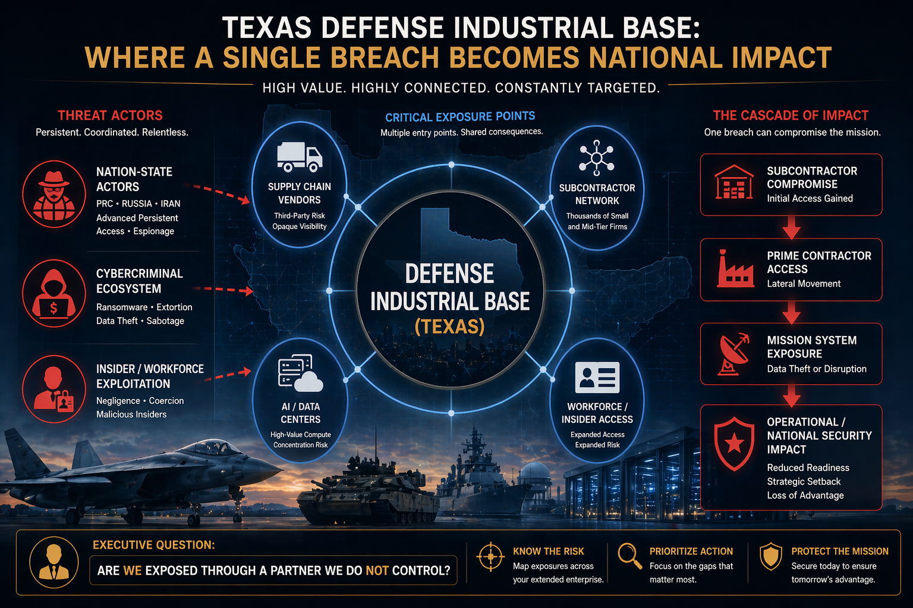

Sector Intelligence
Texas DIB Is a Strategic Collection Target, Not Just a Compliance Problem
Texas leads U.S. states in Department of Defense spending, $71.6 billion in FY2023, with 211,504 DoD personnel and a dense contractor ecosystem spanning JBSA, Fort Cavazos, Fort Bliss, and Dyess. That makes the Texas DIB a strategic intelligence target for nation-state collection, supply-chain access, sanctions evasion, and program pressure. For DIB boards and general counsel, CMMC compliance is a floor, not a ceiling. The question is whether leadership can show it understood the strategic threat environment and documented action before compromise created program, contractual, or reputational consequences.

Questions for Leadership
Could your leadership answer these today?
A risk rating does not tell a board what to decide. These questions do. Where the answer is unclear, untested, or undocumented, there is a decision gap.
- Which external dependency could change this decision?If a Tier 2 subcontractor, managed service provider, or hosted environment is compromised, which programs and contracts are exposed?
- Who owns escalation?Who decides when to notify the prime, the contracting officer, or the government, and on what evidence?
- What warning threshold changes posture?An advisory naming your sector, an anomaly in remote hiring, or a supplier's incident: which one moves leadership?
- Which assumption has not been tested?That compliance with CMMC protects a program from a patient, persistent adversary.
- What must be documented?What leadership knew about supply-chain and remote-worker exposure, and what it decided.
- Has this decision ever been rehearsed?Cutting a supplier's or remote worker's access while a program deadline is at stake.
- What happens if the disruption spreads into another sector?If data-center or telecom disruption hits San Antonio-area contractors at once, who coordinates, and with whom?
What Adversaries Are Targeting
Crown Jewels of Texas Defense
Defense intellectual property, controlled unclassified information, and the systems that connect subcontractors to prime contractors and prime contractors to the DoD are high-value targets for nation-state cyber operations affecting Texas.
CUI / FCI Environments
Controlled Unclassified Information and Federal Contract Information handled by Texas prime and subcontractors represents strategic intelligence value for PRC actors seeking insight into weapons systems, logistics, and operational planning.
Defense Designs & Aerospace IP
Aerospace, ISR, and defense electronics intellectual property. Texas hosts major defense design and sustainment operations whose technical data represents years of R&D investment adversaries seek to replicate without the cost.
AI / Data Center Uptime
Texas-based cloud and data center providers host multi-tenant workloads supporting defense contractors. A compromise here creates simultaneous downstream exposure across multiple DIB customers and adjacent sectors.
Tier 2 / Tier 3 Subcontractors
Smaller subcontractors handling CUI with fewer resources, less mature security programs, and the same regulatory obligations as prime contractors. Smaller subcontractors can provide attractive access pathways to higher-value targets.
Remote Technical Talent
North Korean remote IT worker schemes exploit remote-work hiring norms, identity fraud, and U.S.-based facilitators to gain access to contractor systems, creating covert access, sanctions risk, and extortion potential simultaneously.
JBSA Ecosystem Dependencies
Joint Base San Antonio hosts NSA Texas, 16th Air Force, and a dense contractor base. Shared infrastructure dependencies create a target-rich environment where contractor compromise can have mission-level consequences.
Priority Threat Actors
Who Poses Risk to Texas DIB
The defense sector faces a blended threat spectrum, espionage-oriented nation-state actors, insider-adjacent schemes, and criminal ransomware operators, each with distinct objectives and methods.
Volt Typhoon / APT41 / APT10
PRC-linked actors remain priority espionage concerns for defense technology, aerospace designs, and ISR systems. Supply-chain compromise remains an attractive access pathway into hardened prime contractor environments.
Lazarus / North Korean IT Workers
North Korean operatives use fabricated identities to seek employment at defense contractors and technology firms. FBI and DOJ actions in 2025 documented U.S.-based facilitators, remote access tooling, and payroll routing anomalies. Data extortion can follow access establishment.
IRGC-CY / Hacktivist Proxies
Iran-linked actors have used claimed defense-sector data exposure as coercive signaling. Texas DIB subcontractors remain exposed to disruption, data theft, and influence activity during periods of regional tension.
Ransomware / Data Center Targeting
Criminal ransomware groups targeting cloud and data center providers can create broad blast radii because they host multi-tenant workloads. Rackspace's December 2022 Hosted Exchange incident demonstrated how a Texas-based provider's compromise ripples across its customer base simultaneously.
Incident Record
Texas DIB: What Has Already Happened
The following vignettes are drawn from primary sources, government records, official advisories, and public disclosures. The threat to Texas defense and compute infrastructure is not theoretical.
- Oct–Nov 2025Regulatory
CMMC Formalization, Defense Supply Chain Compliance Reshaping
DoD established the Cybersecurity Maturity Model Certification program via final rule, creating phased certification requirements for contractors handling CUI and FCI. The program directly reshapes the Texas DIB operating environment, driving auditability requirements, third-party assessment costs, and security baseline expectations across the contractor ecosystem.
Texas operational impact: Texas DIB primes and subcontractors face changed contracting requirements. Tier 2 and Tier 3 subcontractors with thinner resources face the highest compliance pressure relative to their security investment capacity, creating a window of exploitable vulnerability during the transition period.
Source: DoD CMMC Final Rule, 32 CFR Part 170
- Jun–Jul 2025DOJ / FBI Actions
North Korean Remote IT Worker Schemes, Texas Contractor Exposure
DOJ announced coordinated enforcement actions targeting North Korean remote worker schemes. FBI issued updated alerts describing the mechanism: U.S.-based facilitators, remote access tooling, and financial account routing designed to conceal DPRK identity and generate revenue for weapons programs.
Texas operational impact: Direct relevance to Texas defense contractors and data centers hiring remote technical talent. The scheme creates simultaneous covert access, sanctions exposure, fraud risk, and extortion potential, none of which manifests immediately, making it difficult to detect through standard HR processes.
Attribution: DPRK-linked schemes per DOJ and FBI enforcement actions
- Feb 2024National Advisory
Volt Typhoon Critical Infrastructure Pre-Positioning
CISA and partners issued an advisory documenting PRC-linked Volt Typhoon's persistent access inside U.S. critical infrastructure using stealth techniques and native operating tools. The advisory explicitly assessed the activity as pre-positioning for future disruption rather than immediate impact.
Texas operational impact: Strategic risk to Texas military and industrial enablement networks through shared telecom and IT infrastructure. JBSA's concentration of cyber units, intelligence organizations, and defense contractors creates a high-density target environment for this class of persistent access operation.
Attribution: PRC state-sponsored, Volt Typhoon, per CISA/NSA/FBI joint advisory
- Dec 2022Texas-Based Provider
Rackspace Hosted Exchange Ransomware, Multi-Tenant Disruption
Rackspace Technology's Hosted Exchange environment was disrupted by ransomware, requiring service isolation and customer migrations. Rackspace is headquartered in San Antonio, making this a Texas-origin event with national and international reach across its customer base.
Texas operational impact: Demonstrates how a single Texas-based cloud provider's compromise creates simultaneous disruption across multiple tenant organizations, including defense contractors dependent on hosted email and communications infrastructure.
Attribution: Ransomware (actor not central in primary Rackspace statement)
Liberty CTI Assessment
The Defense Sector Judgment
Liberty CTI assesses with HIGH CONFIDENCE that PRC-linked actors are likely to view the Texas defense supply chain, especially Tier 2 and Tier 3 subcontractors, as an attractive environment for persistent access. Being adjacent to national security does not remove risk. Proximity to sensitive programs can make a subcontractor a high-value collection target.
Liberty CTI keeps its judgments on the record and revisits them as evidence changes. See The Track Record.

Could leadership respond before a program is exposed?
The Executive Intelligence Baseline establishes which of these questions your leadership can already answer. The Executive Decision Exercise tests the ones it cannot.